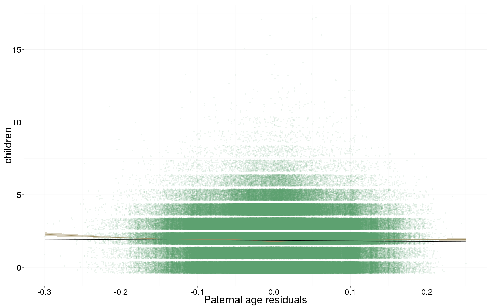
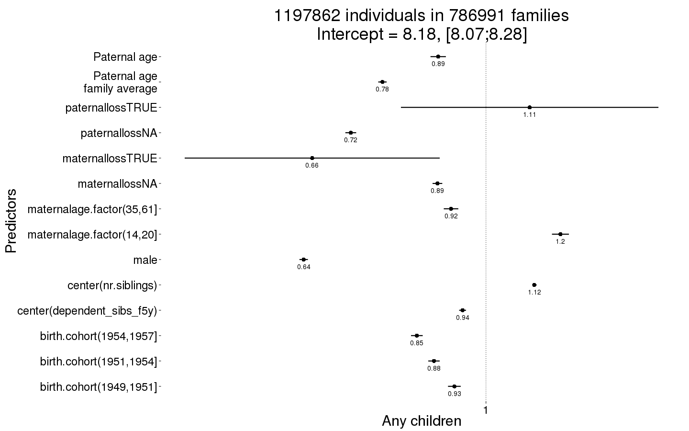
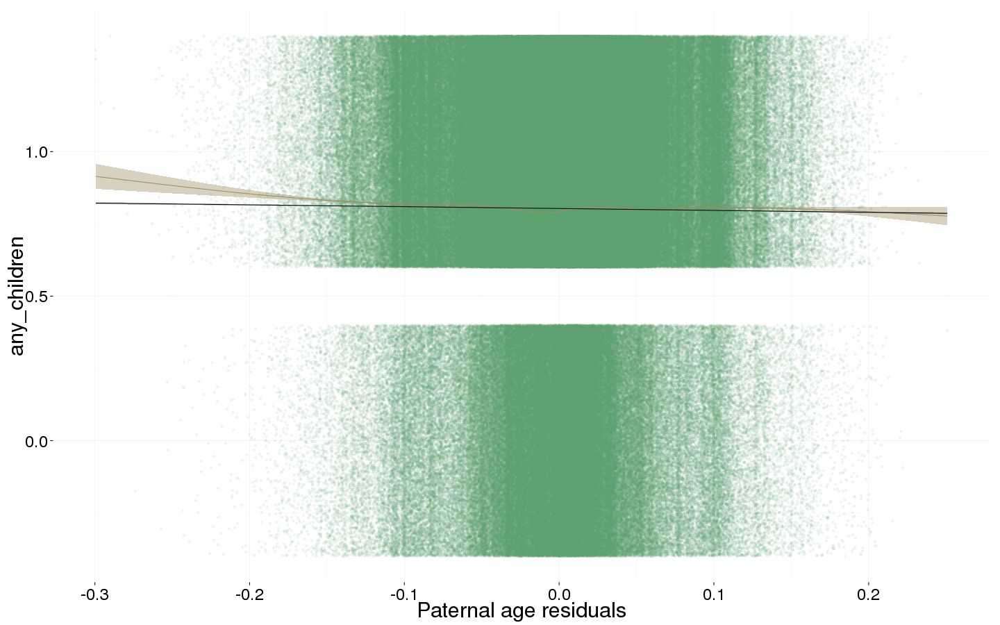
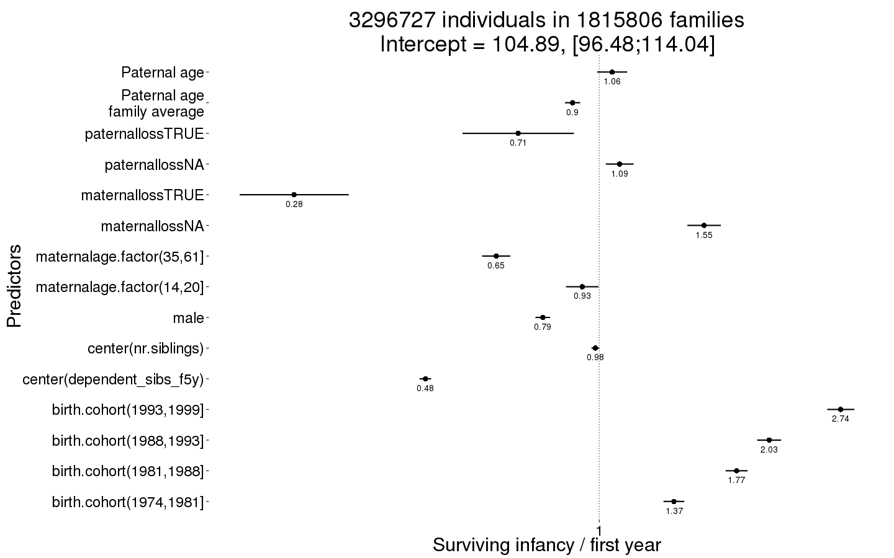
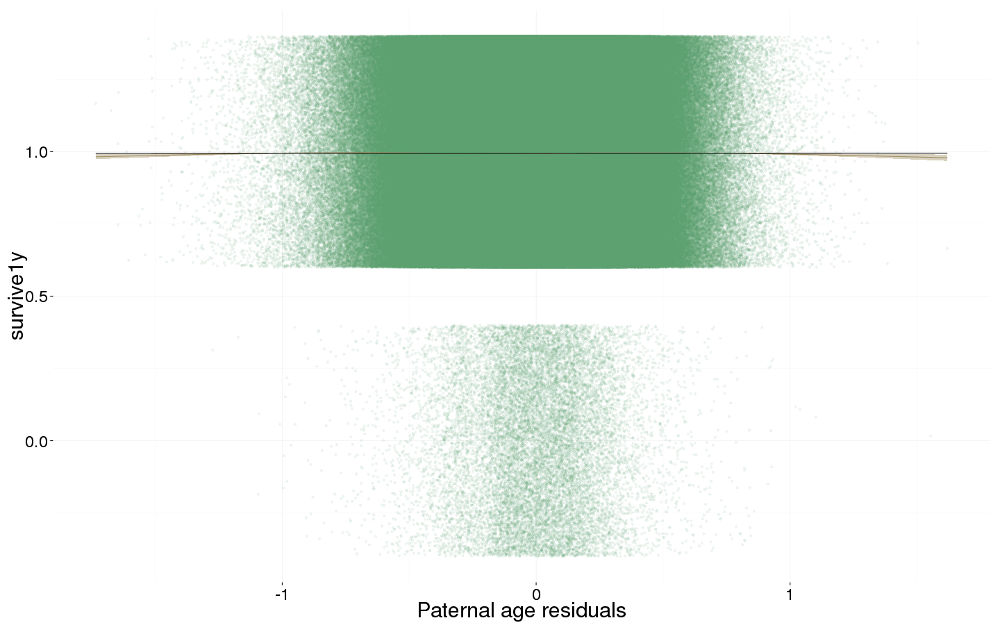
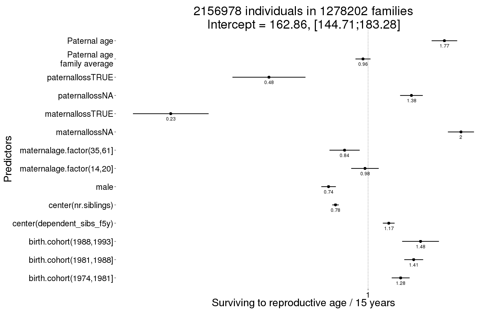
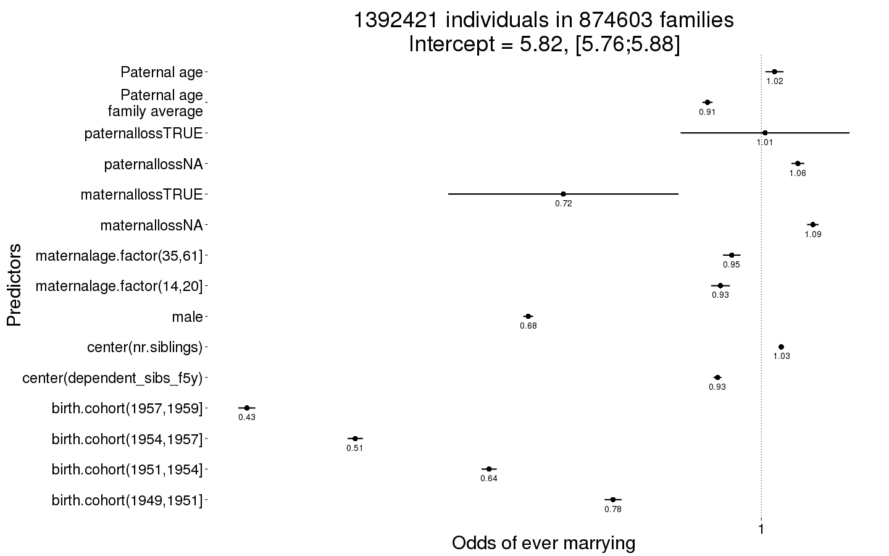
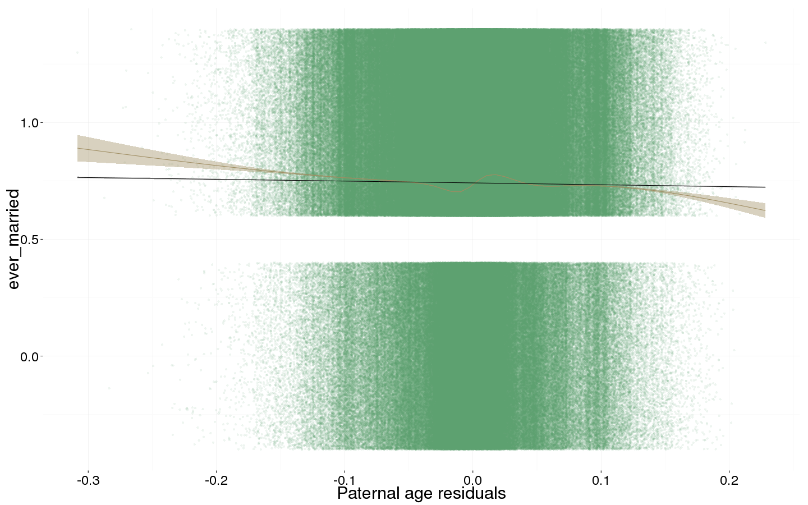
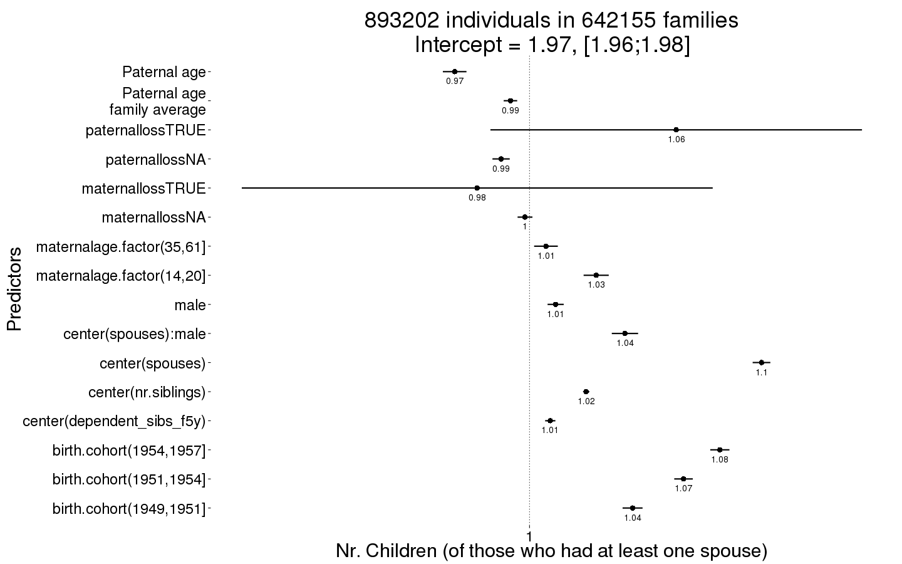
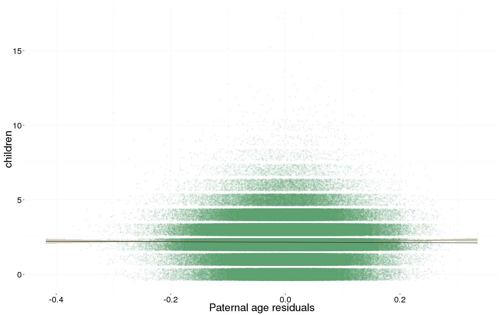

Sweden main controls
Loading details
# bsub -q mpi -W 48:00 -n 16,20 Rscript -e "setwd('/usr/users/rarslan/updated_data/2_swed_main_controls/');knitr::knit(input = '2_swed_main_controls.Rmd', output = '2_swed_main_controls.md')"
library(data.table); library(ggplot2); library(knitr); library(lme4); library(formr); library(blme)
opts_chunk$set(warning=TRUE, cache=T,cache.lazy=F,tidy=FALSE,autodep=TRUE,dev=c('png','pdf'),fig.width=20,fig.height=12.5,out.width='1440px',out.height='900px',cache.extra=file.info('swed1.rdata')[, 'mtime'])
source("0__helpers.R")
load("swed1.rdata")
swed.2 = swed.2[byear > 1969,]Analysis description
Data subset
The swed.1 dataset contains only those participants where paternal age is known, the birthdate of the father is between 1890 and 1900. ### Model description All of the following models have the following in common:
Optimizer settings
Bobyqa is fairly robust to convergence failures. In addition to using Bobyqa, we center some variables that otherwise lead to large eigenvalues.
control_defaults = glmerControl(optimizer = "bobyqa")Covariates
As in our main models, we control for birth.cohort (birth years in five equally large bins), male sex. Additionally, we control for paternal and maternal loss (whether either parent died within 5 years of the birth), for maternal age (bins of 14-20, 20-35 and 35-50), the number of siblings.
Model stratification
We added random intercepts for each family (father-mother dyad). We then controlled for the average paternal age in the family. Hence, the paternal age effects in the plot are split into those between families and those within families or between siblings. The relevant effect for our hypothesized mechanism, de novo mutations, is paternal age between siblings.
Episodes of selection
Here, episodes of selection refers to survival, mating success, reproductive success. To steer clear of sacrificial pseudo-replication, we make sure that each effect cannot be explained by the episode of selection preceding it. At its simplest, we check for effect on survival to reproduction only among those who lived to their first birthday. In later models, we look for an effect on number of children only among those who married and control their number of spouses.
All children
unlike the other models we don’t compute the number of surviving children. The pragmatic reason is that a) if we force data to span enough time for children’s survival to count as observed, we dramatically reduce sample size and b) child mortality in modern Sweden is so low, that there really shouldn’t be much of a difference between the two numbers
Children_all <- bglmer(
children ~ center(dependent_sibs_f5y) + maternalage.factor + paternalloss + maternalloss + center(nr.siblings) + male + birth.cohort + paternalage.mean + paternalage.diff + (1|idParents),
data= swed.1, subset = byear < 1958,
family = 'poisson', control = control_defaults,
fixef.prior = normal() )
summary(Children_all)## Cov prior : idParents ~ wishart(df = 3.5, scale = Inf, posterior.scale = cov, common.scale = TRUE)
## Fixef prior: normal(sd = c(10, 2.5, ...), corr = c(0 ...), common.scale = FALSE)
## Prior dev : 75
##
## Generalized linear mixed model fit by maximum likelihood (Laplace
## Approximation) [bglmerMod]
## Family: poisson ( log )
## Formula: children ~ center(dependent_sibs_f5y) + maternalage.factor +
## paternalloss + maternalloss + center(nr.siblings) + male +
## birth.cohort + paternalage.mean + paternalage.diff + (1 |
## idParents)
## Data: swed.1
## Control: control_defaults
## Subset: byear < 1958
##
## AIC BIC logLik deviance df.resid
## 3907574 3907766 -1953771 3907542 1197846
##
## Scaled residuals:
## Min 1Q Median 3Q Max
## -1.783 -0.640 0.100 0.708 11.213
##
## Random effects:
## Groups Name Variance Std.Dev.
## idParents (Intercept) 1.45e-05 0.00381
## Number of obs: 1197862, groups: idParents, 786991
##
## Fixed effects:
## Estimate Std. Error z value Pr(>|z|)
## (Intercept) 0.660321 0.001550 426 < 2e-16 ***
## center(dependent_sibs_f5y) -0.003986 0.001030 -4 0.00011 ***
## maternalage.factor(14,20] 0.050078 0.002522 20 < 2e-16 ***
## maternalage.factor(35,61] -0.005806 0.002402 -2 0.01563 *
## paternallossNA -0.057663 0.001747 -33 < 2e-16 ***
## paternallossTRUE 0.073073 0.037582 2 0.05185 .
## maternallossNA -0.020463 0.001502 -14 < 2e-16 ***
## maternallossTRUE -0.107603 0.047013 -2 0.02209 *
## center(nr.siblings) 0.036924 0.000631 59 < 2e-16 ***
## male -0.056204 0.001343 -42 < 2e-16 ***
## birth.cohort(1949,1951] -0.000212 0.002021 0 0.91661
## birth.cohort(1951,1954] 0.001802 0.001832 1 0.32552
## birth.cohort(1954,1957] 0.004788 0.001878 3 0.01077 *
## paternalage.mean -0.046132 0.001362 -34 < 2e-16 ***
## paternalage.diff -0.048872 0.002394 -20 < 2e-16 ***
## ---
## Signif. codes: 0 '***' 0.001 '**' 0.01 '*' 0.05 '.' 0.1 ' ' 1
##
## Correlation of Fixed Effects:
## (Intr) c(__5) m.(14, m.(35, ptrnNA ptTRUE mtrnNA mtTRUE cnt(.)
## cntr(dp__5) -0.052
## mtr.(14,20] -0.101 0.101
## mtr.(35,61] -0.240 0.132 -0.095
## patrnllssNA -0.114 -0.001 -0.020 -0.039
## ptrnllsTRUE -0.001 -0.001 -0.011 -0.003 0.018
## matrnllssNA -0.294 -0.012 -0.062 0.112 -0.103 -0.001
## mtrnllsTRUE -0.006 0.000 -0.015 0.003 0.000 -0.002 0.020
## cntr(nr.sb) 0.022 -0.752 -0.079 -0.111 0.021 0.007 0.021 0.007
## male -0.430 -0.001 0.002 0.002 -0.001 -0.001 0.002 0.002 0.000
## b.(1949,195 -0.468 0.012 -0.005 0.004 -0.030 -0.001 -0.063 -0.003 -0.016
## b.(1951,195 -0.491 0.019 -0.003 0.009 -0.086 -0.005 -0.136 -0.007 -0.024
## b.(1954,195 -0.447 0.016 -0.008 0.008 -0.158 -0.020 -0.205 -0.015 -0.020
## paternlg.mn -0.067 0.068 0.273 -0.358 0.201 0.014 0.105 0.007 -0.115
## patrnlg.dff 0.003 0.147 0.253 -0.410 0.138 -0.003 0.152 -0.003 -0.118
## male b.(194 b.(1951 b.(1954 ptrnlg.m
## cntr(dp__5)
## mtr.(14,20]
## mtr.(35,61]
## patrnllssNA
## ptrnllsTRUE
## matrnllssNA
## mtrnllsTRUE
## cntr(nr.sb)
## male
## b.(1949,195 -0.003
## b.(1951,195 -0.003 0.429
## b.(1954,195 -0.003 0.427 0.497
## paternlg.mn 0.001 0.003 -0.004 -0.016
## patrnlg.dff 0.001 -0.030 -0.064 -0.100 0.217Children_all_coefs = fortify_mine(Children_all)
plot_fortified_mer(Children_all_coefs, "Nr. Children (all)")plot_residuals(Children_all)
Any children
swed.1$any_children = ifelse(swed.1$children > 0, 1, 0)
Any_children <- bglmer(
any_children ~ center(dependent_sibs_f5y) + maternalage.factor + paternalloss + maternalloss + center(nr.siblings) + birth.cohort + male + paternalage.mean + paternalage.diff + (1|idParents),
data= swed.1, subset = byear < 1958,
family = 'binomial', control = control_defaults,
fixef.prior = normal() )
summary(Any_children)## Cov prior : idParents ~ wishart(df = 3.5, scale = Inf, posterior.scale = cov, common.scale = TRUE)
## Fixef prior: normal(sd = c(10, 2.5, ...), corr = c(0 ...), common.scale = FALSE)
## Prior dev : 58
##
## Generalized linear mixed model fit by maximum likelihood (Laplace
## Approximation) [bglmerMod]
## Family: binomial ( logit )
## Formula: any_children ~ center(dependent_sibs_f5y) + maternalage.factor +
## paternalloss + maternalloss + center(nr.siblings) + birth.cohort +
## male + paternalage.mean + paternalage.diff + (1 | idParents)
## Data: swed.1
## Control: control_defaults
## Subset: byear < 1958
##
## AIC BIC logLik deviance df.resid
## 1165437 1165629 -582703 1165405 1197846
##
## Scaled residuals:
## Min 1Q Median 3Q Max
## -4.637 0.317 0.388 0.450 1.084
##
## Random effects:
## Groups Name Variance Std.Dev.
## idParents (Intercept) 0.726 0.852
## Number of obs: 1197862, groups: idParents, 786991
##
## Fixed effects:
## Estimate Std. Error z value Pr(>|z|)
## (Intercept) 2.10129 0.00645 326 <2e-16 ***
## center(dependent_sibs_f5y) -0.05679 0.00426 -13 <2e-16 ***
## maternalage.factor(14,20] 0.18064 0.01051 17 <2e-16 ***
## maternalage.factor(35,61] -0.08482 0.00899 -9 <2e-16 ***
## paternallossNA -0.32810 0.00668 -49 <2e-16 ***
## paternallossTRUE 0.10599 0.15938 1 0.5060
## maternallossNA -0.11785 0.00601 -20 <2e-16 ***
## maternallossTRUE -0.42171 0.15786 -3 0.0076 **
## center(nr.siblings) 0.11726 0.00274 43 <2e-16 ***
## birth.cohort(1949,1951] -0.07677 0.00786 -10 <2e-16 ***
## birth.cohort(1951,1954] -0.12624 0.00709 -18 <2e-16 ***
## birth.cohort(1954,1957] -0.16776 0.00723 -23 <2e-16 ***
## male -0.44241 0.00520 -85 <2e-16 ***
## paternalage.mean -0.25127 0.00519 -48 <2e-16 ***
## paternalage.diff -0.11600 0.00953 -12 <2e-16 ***
## ---
## Signif. codes: 0 '***' 0.001 '**' 0.01 '*' 0.05 '.' 0.1 ' ' 1
##
## Correlation of Fixed Effects:
## (Intr) c(__5) m.(14, m.(35, ptrnNA ptTRUE mtrnNA mtTRUE cnt(.)
## cntr(dp__5) -0.050
## mtr.(14,20] -0.090 0.093
## mtr.(35,61] -0.234 0.125 -0.086
## patrnllssNA -0.140 -0.002 -0.022 -0.038
## ptrnllsTRUE -0.002 -0.001 -0.009 -0.002 0.017
## matrnllssNA -0.301 -0.011 -0.055 0.126 -0.118 -0.001
## mtrnllsTRUE -0.008 0.000 -0.017 0.004 0.000 -0.004 0.023
## cntr(nr.sb) 0.072 -0.733 -0.067 -0.096 0.022 0.006 0.014 0.007
## b.(1949,195 -0.453 0.018 -0.004 0.005 -0.027 0.000 -0.063 -0.003 -0.019
## b.(1951,195 -0.480 0.028 -0.002 0.012 -0.082 -0.004 -0.137 -0.008 -0.029
## b.(1954,195 -0.441 0.015 -0.005 0.010 -0.155 -0.017 -0.208 -0.017 -0.022
## male -0.469 0.003 -0.002 0.004 0.009 -0.001 0.007 0.002 -0.008
## paternlg.mn -0.110 0.056 0.248 -0.371 0.214 0.011 0.112 0.009 -0.086
## patrnlg.dff -0.008 0.163 0.225 -0.394 0.144 -0.003 0.150 -0.002 -0.142
## b.(194 b.(1951 b.(1954 male ptrnlg.m
## cntr(dp__5)
## mtr.(14,20]
## mtr.(35,61]
## patrnllssNA
## ptrnllsTRUE
## matrnllssNA
## mtrnllsTRUE
## cntr(nr.sb)
## b.(1949,195
## b.(1951,195 0.449
## b.(1954,195 0.450 0.533
## male -0.001 0.000 0.000
## paternlg.mn 0.006 -0.001 -0.013 0.010
## patrnlg.dff -0.034 -0.077 -0.122 0.003 0.211Any_children_coefs = fortify_mine(Any_children)
plot_fortified_mer(Any_children_coefs, "Any children")
plot_residuals(Any_children)
Survival to first year
Survive_infancy <- glmer(
survive1y ~ center(dependent_sibs_f5y) + maternalage.factor + paternalloss + maternalloss + center(nr.siblings) + birth.cohort + male + paternalage.mean + paternalage.diff + (1|idParents),
data= swed.2, subset = byear < 2000,
family = 'binomial', control = control_defaults,
nAGQ = 0 )
summary(Survive_infancy)## Generalized linear mixed model fit by maximum likelihood (Adaptive
## Gauss-Hermite Quadrature, nAGQ = 0) [glmerMod]
## Family: binomial ( logit )
## Formula: survive1y ~ center(dependent_sibs_f5y) + maternalage.factor +
## paternalloss + maternalloss + center(nr.siblings) + birth.cohort +
## male + paternalage.mean + paternalage.diff + (1 | idParents)
## Data: swed.2
## Control: control_defaults
## Subset: byear < 2000
##
## AIC BIC logLik deviance df.resid
## 207445 207666 -103706 207411 3296710
##
## Scaled residuals:
## Min 1Q Median 3Q Max
## -15.535 0.050 0.061 0.076 0.889
##
## Random effects:
## Groups Name Variance Std.Dev.
## idParents (Intercept) 1.93 1.39
## Number of obs: 3296727, groups: idParents, 1815806
##
## Fixed effects:
## Estimate Std. Error z value Pr(>|z|)
## (Intercept) 4.65294 0.04266 109.1 < 2e-16 ***
## center(dependent_sibs_f5y) -0.72485 0.01233 -58.8 < 2e-16 ***
## maternalage.factor(14,20] -0.07078 0.03454 -2.0 0.0404 *
## maternalage.factor(35,61] -0.42950 0.02998 -14.3 < 2e-16 ***
## paternallossNA 0.08558 0.02964 2.9 0.0039 **
## paternallossTRUE -0.33769 0.11847 -2.9 0.0044 **
## maternallossNA 0.43768 0.03567 12.3 < 2e-16 ***
## maternallossTRUE -1.27183 0.11611 -11.0 < 2e-16 ***
## center(nr.siblings) -0.01584 0.00834 -1.9 0.0576 .
## birth.cohort(1974,1981] 0.31172 0.02213 14.1 < 2e-16 ***
## birth.cohort(1981,1988] 0.57309 0.02332 24.6 < 2e-16 ***
## birth.cohort(1988,1993] 0.70889 0.02551 27.8 < 2e-16 ***
## birth.cohort(1993,1999] 1.00742 0.02887 34.9 < 2e-16 ***
## male -0.23513 0.01553 -15.1 < 2e-16 ***
## paternalage.mean -0.11092 0.01613 -6.9 6.1e-12 ***
## paternalage.diff 0.05424 0.03201 1.7 0.0902 .
## ---
## Signif. codes: 0 '***' 0.001 '**' 0.01 '*' 0.05 '.' 0.1 ' ' 1
##
## Correlation of Fixed Effects:
## (Intr) c(__5) m.(14, m.(35, ptrnNA ptTRUE mtrnNA mtTRUE cnt(.)
## cntr(dp__5) -0.025
## mtr.(14,20] -0.071 0.094
## mtr.(35,61] -0.108 0.123 -0.070
## patrnllssNA -0.514 -0.010 0.036 0.001
## ptrnllsTRUE -0.133 0.007 -0.008 0.003 0.212
## matrnllssNA -0.705 -0.013 -0.007 0.046 -0.065 -0.004
## mtrnllsTRUE -0.217 0.009 -0.003 -0.001 -0.007 -0.030 0.277
## cntr(nr.sb) -0.018 -0.776 -0.080 -0.090 0.012 0.014 0.005 0.010
## b.(1974,198 -0.132 0.000 0.017 0.000 -0.109 -0.021 -0.075 -0.020 -0.008
## b.(1981,198 -0.051 -0.065 0.029 -0.025 -0.173 -0.032 -0.119 -0.031 0.016
## b.(1988,199 -0.013 -0.086 0.028 -0.030 -0.191 -0.033 -0.132 -0.033 0.044
## b.(1993,199 0.007 -0.070 0.026 -0.041 -0.190 -0.030 -0.128 -0.032 0.044
## male -0.209 0.002 0.001 0.000 -0.001 0.000 0.002 0.001 0.004
## paternlg.mn -0.052 0.020 0.223 -0.356 0.177 0.008 0.029 0.007 -0.074
## patrnlg.dff -0.087 0.105 0.257 -0.335 0.108 -0.013 0.052 -0.013 -0.061
## b.(197 b.(1981 b.(1988 b.(199 male ptrnlg.m
## cntr(dp__5)
## mtr.(14,20]
## mtr.(35,61]
## patrnllssNA
## ptrnllsTRUE
## matrnllssNA
## mtrnllsTRUE
## cntr(nr.sb)
## b.(1974,198
## b.(1981,198 0.490
## b.(1988,199 0.450 0.475
## b.(1993,199 0.402 0.423 0.408
## male 0.000 -0.002 -0.001 -0.001
## paternlg.mn -0.065 -0.118 -0.130 -0.152 0.000
## patrnlg.dff 0.004 -0.018 -0.049 -0.046 0.000 0.201Survive_infancy_coefs = fortify_mine(Survive_infancy)
plot_fortified_mer(Survive_infancy_coefs, "Surviving infancy / first year")
plot_residuals(Survive_infancy)## Warning in checkConv(attr(opt, "derivs"), opt$par, ctrl = control$checkConv, : Model is nearly unidentifiable: very large eigenvalue
## - Rescale variables?
Survival to reproductive age
Survive_reproductive <- glmer(
surviveR ~ center(dependent_sibs_f5y) + maternalage.factor + paternalloss + maternalloss + center(nr.siblings) + birth.cohort + male + paternalage.mean + paternalage.diff + (1|idParents),
data= swed.2, subset = survive1y == TRUE & byear < 1990,
family = 'binomial', control = control_defaults,
nAGQ = 0 )
summary(Survive_reproductive)## Generalized linear mixed model fit by maximum likelihood (Adaptive
## Gauss-Hermite Quadrature, nAGQ = 0) [glmerMod]
## Family: binomial ( logit )
## Formula: surviveR ~ center(dependent_sibs_f5y) + maternalage.factor +
## paternalloss + maternalloss + center(nr.siblings) + birth.cohort +
## male + paternalage.mean + paternalage.diff + (1 | idParents)
## Data: swed.2
## Control: control_defaults
## Subset: survive1y == TRUE & byear < 1990
##
## AIC BIC logLik deviance df.resid
## 73548 73749 -36758 73516 2156962
##
## Scaled residuals:
## Min 1Q Median 3Q Max
## -14.699 0.041 0.046 0.052 0.455
##
## Random effects:
## Groups Name Variance Std.Dev.
## idParents (Intercept) 1.52 1.23
## Number of obs: 2156978, groups: idParents, 1278202
##
## Fixed effects:
## Estimate Std. Error z value Pr(>|z|)
## (Intercept) 5.0929 0.0603 84.5 < 2e-16 ***
## center(dependent_sibs_f5y) 0.1547 0.0225 6.9 5.9e-12 ***
## maternalage.factor(14,20] -0.0232 0.0526 -0.4 0.6586
## maternalage.factor(35,61] -0.1757 0.0577 -3.0 0.0023 **
## paternallossNA 0.3248 0.0433 7.5 6.7e-14 ***
## paternallossTRUE -0.7419 0.1395 -5.3 1.0e-07 ***
## maternallossNA 0.6953 0.0498 13.9 < 2e-16 ***
## maternallossTRUE -1.4770 0.1445 -10.2 < 2e-16 ***
## center(nr.siblings) -0.2438 0.0125 -19.5 < 2e-16 ***
## birth.cohort(1974,1981] 0.2442 0.0342 7.1 9.9e-13 ***
## birth.cohort(1981,1988] 0.3417 0.0361 9.5 < 2e-16 ***
## birth.cohort(1988,1993] 0.3929 0.0703 5.6 2.3e-08 ***
## male -0.2956 0.0279 -10.6 < 2e-16 ***
## paternalage.mean -0.0380 0.0288 -1.3 0.1871
## paternalage.diff 0.5716 0.0488 11.7 < 2e-16 ***
## ---
## Signif. codes: 0 '***' 0.001 '**' 0.01 '*' 0.05 '.' 0.1 ' ' 1
##
## Correlation of Fixed Effects:
## (Intr) c(__5) m.(14, m.(35, ptrnNA ptTRUE mtrnNA mtTRUE cnt(.)
## cntr(dp__5) 0.049
## mtr.(14,20] -0.079 0.118
## mtr.(35,61] -0.140 0.145 -0.075
## patrnllssNA -0.503 -0.016 0.050 0.010
## ptrnllsTRUE -0.160 0.008 -0.012 0.006 0.247
## matrnllssNA -0.667 -0.015 -0.008 0.062 -0.071 -0.005
## mtrnllsTRUE -0.231 0.008 -0.005 0.001 -0.006 -0.053 0.299
## cntr(nr.sb) -0.053 -0.674 -0.107 -0.134 0.008 0.026 0.002 0.020
## b.(1974,198 -0.152 -0.002 0.016 0.003 -0.116 -0.024 -0.082 -0.025 -0.004
## b.(1981,198 -0.065 -0.072 0.023 -0.029 -0.192 -0.042 -0.136 -0.039 0.026
## b.(1988,199 -0.019 -0.059 0.013 -0.020 -0.113 -0.025 -0.081 -0.024 0.036
## male -0.273 0.003 -0.001 0.000 0.001 -0.001 0.002 -0.001 0.001
## paternlg.mn -0.050 0.043 0.266 -0.336 0.200 0.012 0.036 0.010 -0.101
## patrnlg.dff -0.084 0.102 0.296 -0.370 0.140 -0.014 0.068 -0.012 -0.010
## b.(197 b.(1981 b.(1988 male ptrnlg.m
## cntr(dp__5)
## mtr.(14,20]
## mtr.(35,61]
## patrnllssNA
## ptrnllsTRUE
## matrnllssNA
## mtrnllsTRUE
## cntr(nr.sb)
## b.(1974,198
## b.(1981,198 0.493
## b.(1988,199 0.256 0.268
## male -0.001 -0.001 0.000
## paternlg.mn -0.074 -0.135 -0.078 0.000
## patrnlg.dff -0.002 -0.042 -0.031 0.001 0.255Survive_reproductive_coefs = fortify_mine(Survive_reproductive)
plot_fortified_mer(Survive_reproductive_coefs, "Surviving to reproductive age / 15 years")
plot_residuals(Survive_reproductive)## Warning in checkConv(attr(opt, "derivs"), opt$par, ctrl = control$checkConv, : Model is nearly unidentifiable: very large eigenvalue
## - Rescale variables?
Ever married
Ever_married <- bglmer(
ever_married ~ center(dependent_sibs_f5y) + maternalage.factor + paternalloss + maternalloss + center(nr.siblings) + birth.cohort + male + paternalage.mean + paternalage.diff + (1|idParents),
data= swed.1, subset = (surviveR == T | is.na(surviveR)) & byear < 1960,
family = 'binomial', control = control_defaults,
fixef.prior = normal() )
summary(Ever_married)## Cov prior : idParents ~ wishart(df = 3.5, scale = Inf, posterior.scale = cov, common.scale = TRUE)
## Fixef prior: normal(sd = c(10, 2.5, ...), corr = c(0 ...), common.scale = FALSE)
## Prior dev : 63
##
## Generalized linear mixed model fit by maximum likelihood (Laplace
## Approximation) [bglmerMod]
## Family: binomial ( logit )
## Formula: ever_married ~ center(dependent_sibs_f5y) + maternalage.factor +
## paternalloss + maternalloss + center(nr.siblings) + birth.cohort +
## male + paternalage.mean + paternalage.diff + (1 | idParents)
## Data: swed.1
## Control: control_defaults
## Subset: (surviveR == T | is.na(surviveR)) & byear < 1960
##
## AIC BIC logLik deviance df.resid
## 1559033 1559239 -779499 1558999 1392404
##
## Scaled residuals:
## Min 1Q Median 3Q Max
## -2.914 -1.082 0.475 0.562 1.357
##
## Random effects:
## Groups Name Variance Std.Dev.
## idParents (Intercept) 0.439 0.662
## Number of obs: 1392421, groups: idParents, 874603
##
## Fixed effects:
## Estimate Std. Error z value Pr(>|z|)
## (Intercept) 1.76132 0.00563 313.1 < 2e-16 ***
## center(dependent_sibs_f5y) -0.07257 0.00334 -21.7 < 2e-16 ***
## maternalage.factor(14,20] -0.06763 0.00792 -8.5 < 2e-16 ***
## maternalage.factor(35,61] -0.04900 0.00743 -6.6 4.4e-11 ***
## paternallossNA 0.06052 0.00543 11.2 < 2e-16 ***
## paternallossTRUE 0.00626 0.07136 0.1 0.93014
## maternallossNA 0.08537 0.00485 17.6 < 2e-16 ***
## maternallossTRUE -0.32781 0.09729 -3.4 0.00075 ***
## center(nr.siblings) 0.03305 0.00213 15.5 < 2e-16 ***
## birth.cohort(1949,1951] -0.24544 0.00720 -34.1 < 2e-16 ***
## birth.cohort(1951,1954] -0.45067 0.00642 -70.2 < 2e-16 ***
## birth.cohort(1954,1957] -0.67241 0.00646 -104.1 < 2e-16 ***
## birth.cohort(1957,1959] -0.85196 0.00719 -118.5 < 2e-16 ***
## male -0.38589 0.00419 -92.1 < 2e-16 ***
## paternalage.mean -0.08914 0.00428 -20.8 < 2e-16 ***
## paternalage.diff 0.02187 0.00764 2.9 0.00421 **
## ---
## Signif. codes: 0 '***' 0.001 '**' 0.01 '*' 0.05 '.' 0.1 ' ' 1
##
## Correlation of Fixed Effects:
## (Intr) c(__5) m.(14, m.(35, ptrnNA ptTRUE mtrnNA mtTRUE cnt(.)
## cntr(dp__5) -0.054
## mtr.(14,20] -0.092 0.102
## mtr.(35,61] -0.217 0.129 -0.095
## patrnllssNA -0.104 -0.001 -0.014 -0.033
## ptrnllsTRUE -0.003 0.001 -0.008 -0.001 0.027
## matrnllssNA -0.257 -0.011 -0.053 0.125 -0.084 -0.002
## mtrnllsTRUE -0.008 0.002 -0.011 0.003 0.001 -0.005 0.028
## cntr(nr.sb) 0.049 -0.730 -0.074 -0.103 0.014 0.007 0.011 0.006
## b.(1949,195 -0.507 0.016 -0.004 0.003 -0.026 -0.001 -0.058 -0.002 -0.015
## b.(1951,195 -0.553 0.029 -0.003 0.008 -0.077 -0.004 -0.129 -0.007 -0.024
## b.(1954,195 -0.530 0.023 -0.007 0.007 -0.145 -0.012 -0.200 -0.014 -0.019
## b.(1957,195 -0.458 0.002 -0.008 0.002 -0.190 -0.037 -0.231 -0.023 -0.002
## male -0.423 0.003 0.002 0.003 -0.002 0.001 0.000 0.002 -0.002
## paternlg.mn -0.082 0.062 0.274 -0.357 0.222 0.009 0.105 0.008 -0.095
## patrnlg.dff 0.005 0.182 0.253 -0.398 0.162 -0.008 0.151 -0.004 -0.160
## b.(194 b.(1951 b.(1954 b.(1957 male ptrnlg.m
## cntr(dp__5)
## mtr.(14,20]
## mtr.(35,61]
## patrnllssNA
## ptrnllsTRUE
## matrnllssNA
## mtrnllsTRUE
## cntr(nr.sb)
## b.(1949,195
## b.(1951,195 0.471
## b.(1954,195 0.477 0.563
## b.(1957,195 0.433 0.518 0.557
## male 0.002 0.007 0.012 0.013
## paternlg.mn 0.004 -0.002 -0.013 -0.020 0.004
## patrnlg.dff -0.030 -0.069 -0.113 -0.134 0.000 0.221Ever_married_coefs = fortify_mine(Ever_married)
plot_fortified_mer(Ever_married_coefs, "Odds of ever marrying")
plot_residuals(Ever_married)
Number of children
Children <- bglmer(
children ~ center(spouses)*male + center(dependent_sibs_f5y) + maternalage.factor + paternalloss + maternalloss + center(nr.siblings) + birth.cohort + paternalage.mean + paternalage.diff + (1|idParents),
data= swed.1, subset = spouses > 0 & byear < 1958,
family = 'poisson', control = control_defaults,
fixef.prior = normal() )
summary(Children)## Cov prior : idParents ~ wishart(df = 3.5, scale = Inf, posterior.scale = cov, common.scale = TRUE)
## Fixef prior: normal(sd = c(10, 2.5, ...), corr = c(0 ...), common.scale = FALSE)
## Prior dev : 85
##
## Generalized linear mixed model fit by maximum likelihood (Laplace
## Approximation) [bglmerMod]
## Family: poisson ( log )
## Formula: children ~ center(spouses) * male + center(dependent_sibs_f5y) +
## maternalage.factor + paternalloss + maternalloss + center(nr.siblings) +
## birth.cohort + paternalage.mean + paternalage.diff + (1 |
## idParents)
## Data: swed.1
## Control: control_defaults
## Subset: spouses > 0 & byear < 1958
##
## AIC BIC logLik deviance df.resid
## 2851158 2851369 -1425561 2851122 893184
##
## Scaled residuals:
## Min 1Q Median 3Q Max
## -1.950 -0.254 -0.058 0.544 10.303
##
## Random effects:
## Groups Name Variance Std.Dev.
## idParents (Intercept) 2.11e-06 0.00145
## Number of obs: 893202, groups: idParents, 642155
##
## Fixed effects:
## Estimate Std. Error z value Pr(>|z|)
## (Intercept) 0.678428 0.001950 348 < 2e-16 ***
## center(spouses) 0.098888 0.001922 51 < 2e-16 ***
## male 0.011134 0.001753 6 2.1e-10 ***
## center(dependent_sibs_f5y) 0.008840 0.001114 8 2.0e-15 ***
## maternalage.factor(14,20] 0.028413 0.002735 10 < 2e-16 ***
## maternalage.factor(35,61] 0.007007 0.002575 3 0.0065 **
## paternallossNA -0.012120 0.001882 -6 1.2e-10 ***
## paternallossTRUE 0.062525 0.040404 2 0.1217
## maternallossNA -0.001927 0.001614 -1 0.2323
## maternallossTRUE -0.022284 0.051213 0 0.6635
## center(nr.siblings) 0.024155 0.000685 35 < 2e-16 ***
## birth.cohort(1949,1951] 0.043933 0.002173 20 < 2e-16 ***
## birth.cohort(1951,1954] 0.065644 0.002014 33 < 2e-16 ***
## birth.cohort(1954,1957] 0.081137 0.002087 39 < 2e-16 ***
## paternalage.mean -0.008140 0.001470 -6 3.0e-08 ***
## paternalage.diff -0.031912 0.002568 -12 < 2e-16 ***
## center(spouses):male 0.040684 0.002860 14 < 2e-16 ***
## ---
## Signif. codes: 0 '***' 0.001 '**' 0.01 '*' 0.05 '.' 0.1 ' ' 1
##
## Correlation of Fixed Effects:
## (Intr) cntr() male c(__5) m.(14, m.(35, ptrnNA ptTRUE mtrnNA
## centr(spss) -0.537
## male -0.493 0.419
## cntr(dp__5) -0.048 0.007 0.001
## mtr.(14,20] -0.074 -0.023 0.000 0.100
## mtr.(35,61] -0.207 0.005 0.003 0.133 -0.097
## patrnllssNA -0.102 0.008 -0.002 0.000 -0.023 -0.041
## ptrnllsTRUE -0.001 0.000 -0.001 -0.002 -0.012 -0.003 0.018
## matrnllssNA -0.258 0.011 -0.001 -0.010 -0.062 0.112 -0.082 -0.001
## mtrnllsTRUE -0.007 0.003 0.003 0.000 -0.014 0.002 -0.001 0.001 0.020
## cntr(nr.sb) 0.028 -0.012 -0.003 -0.748 -0.078 -0.112 0.017 0.007 0.017
## b.(1949,195 -0.466 0.147 0.026 0.013 -0.009 0.005 -0.032 -0.001 -0.063
## b.(1951,195 -0.511 0.213 0.048 0.022 -0.007 0.011 -0.091 -0.005 -0.137
## b.(1954,195 -0.470 0.210 0.047 0.018 -0.011 0.010 -0.165 -0.021 -0.203
## paternlg.mn -0.076 0.029 0.005 0.068 0.270 -0.361 0.206 0.013 0.110
## patrnlg.dff 0.000 -0.001 -0.002 0.146 0.251 -0.411 0.150 -0.003 0.158
## cntr(spss): 0.286 -0.644 -0.565 -0.003 0.004 -0.003 -0.001 0.000 0.001
## mtTRUE cnt(.) b.(194 b.(1951 b.(1954 ptrnlg.m ptrnlg.d
## centr(spss)
## male
## cntr(dp__5)
## mtr.(14,20]
## mtr.(35,61]
## patrnllssNA
## ptrnllsTRUE
## matrnllssNA
## mtrnllsTRUE
## cntr(nr.sb) 0.006
## b.(1949,195 -0.002 -0.017
## b.(1951,195 -0.007 -0.026 0.443
## b.(1954,195 -0.014 -0.022 0.437 0.512
## paternlg.mn 0.008 -0.113 0.008 0.001 -0.011
## patrnlg.dff -0.002 -0.116 -0.030 -0.066 -0.102 0.220
## cntr(spss): -0.001 0.006 -0.029 -0.057 -0.053 0.001 0.004Children_coefs = fortify_mine(Children)
plot_fortified_mer(Children_coefs, "Nr. Children (of those who had at least one spouse)")
plot_residuals(Children)
Wrap up
Save coefficients
name = "swed_main_controls"
save(list = lstype('confint.merMod'),file=paste0("coefs/",name,"_coefs.rdata"))
save(list = lstype(),file=paste0("coefs/",name,"_models.rdata"))Session Info
sessionInfo()## R version 3.1.0 (2014-04-10)
## Platform: x86_64-redhat-linux-gnu (64-bit)
##
## locale:
## [1] LC_CTYPE=en_US LC_NUMERIC=C LC_TIME=en_US
## [4] LC_COLLATE=en_US LC_MONETARY=en_US LC_MESSAGES=en_US
## [7] LC_PAPER=en_US LC_NAME=C LC_ADDRESS=C
## [10] LC_TELEPHONE=C LC_MEASUREMENT=en_US LC_IDENTIFICATION=C
##
## attached base packages:
## [1] methods stats graphics grDevices utils datasets base
##
## other attached packages:
## [1] mgcv_1.8-4 nlme_3.1-119 stringr_0.6.2 pander_0.5.1
## [5] blme_1.0-2 formr_0.1.11 lme4_1.1-7 Rcpp_0.11.4
## [9] Matrix_1.1-5 ggplot2_1.0.0 data.table_1.9.5 knitr_1.9
##
## loaded via a namespace (and not attached):
## [1] car_2.0-24 chron_2.3-45 codetools_0.2-10
## [4] colorspace_1.2-4 digest_0.6.8 evaluate_0.5.5
## [7] formatR_1.0 formula.tools_1.3.4 grid_3.1.0
## [10] gtable_0.1.2 labeling_0.3 lattice_0.20-29
## [13] MASS_7.3-37 minqa_1.2.4 munsell_0.4.2
## [16] nloptr_1.0.4 nnet_7.3-8 operator.tools_1.3.0
## [19] parallel_3.1.0 pbkrtest_0.4-2 plyr_1.8.1
## [22] proto_0.3-10 quantreg_5.11 reshape2_1.4.1
## [25] scales_0.2.4 SparseM_1.6 splines_3.1.0
## [28] tools_3.1.0date()## [1] "Thu Apr 2 20:48:58 2015"